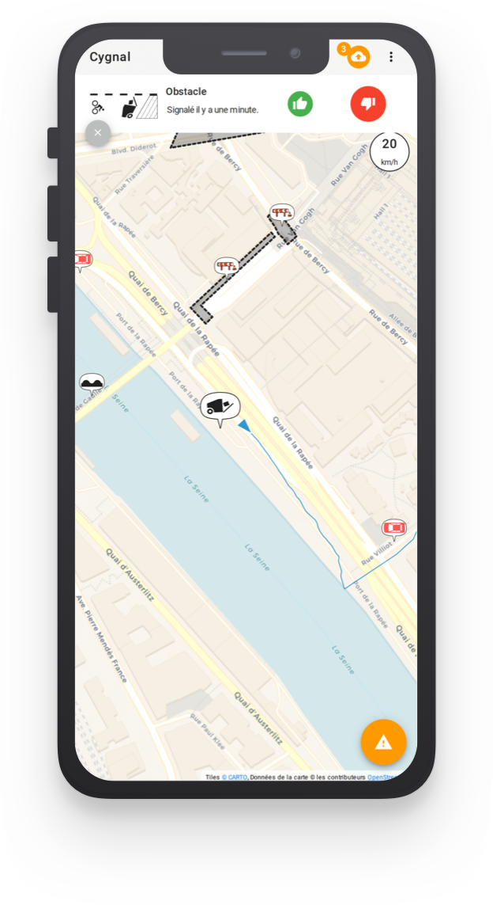

Track and share issues
Report on realtime issues on bike routes: road works, obstacles, accidents, etc.

Based on available OpenData
Always up to date to inform you about road works ahead while you bike!


Free and open-source
From one fellow cyclist to another!

Respecting your privacy
Handles your geolocation with care, keeping it as much as possible within your device.